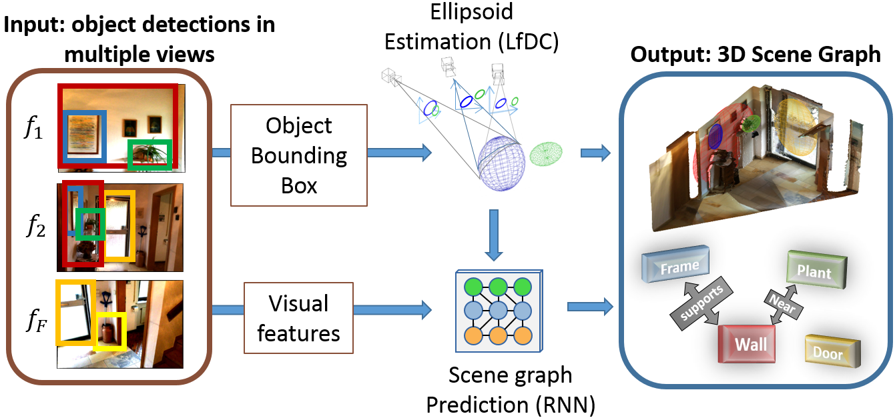
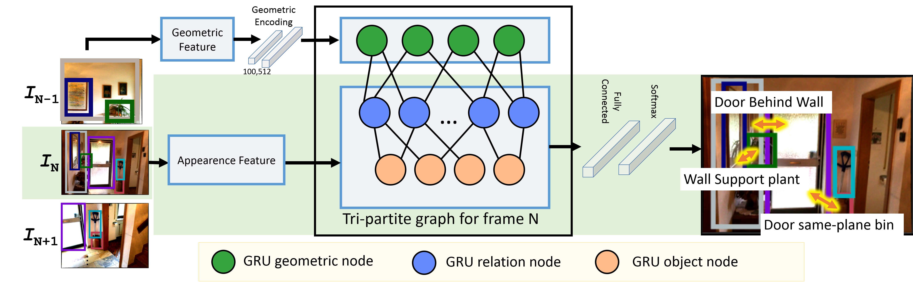
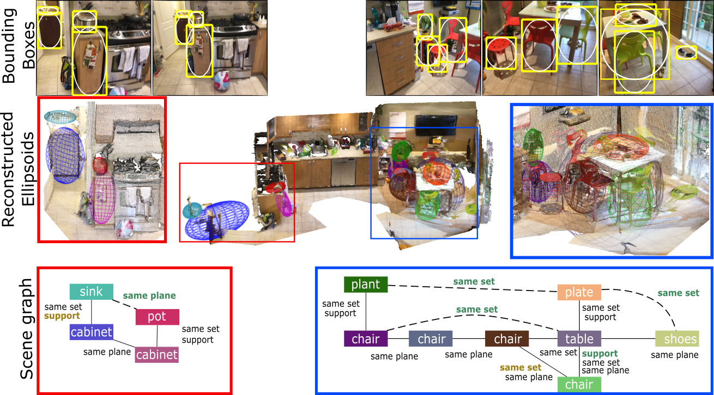

Visual Graphs from Motion (VGfM): Scene understanding with object geometry reasoning. ACCV 2018
The Pavis/VGM group has a strong expertise in geometry and 3D reconstruction. When I joined them in 2016, recent efforts tend to merge their expertise in geometry with machine learning techniques to produce representations which can model both the structure (e.g. the 3D shape) and the semantic (e.g. object labels) of the scene. In this article, I will describe a work which focus on detecting relationship between objects, while still jointly integrating the geometric structure of the scene.
From 2015, generating scene graphs from images have been of increase interest as the semantic richness of this computational representation of objects and their pairwise relationships is very appealing.
Following our research line of combining the strenghts of geometry and machine learning, we propose a system that first computes the geometrical location of objects in a generic scene and then efficiently constructs scene graphs from video by embedding such geometrical reasoning.

The graph neural network framework
In 2017, an interesting paper from Fei-Fei group describes a global inference system based on message passing. This kind of modelling is now called Graph Neural Network (In 2020) and are now mainstream to solve this kind of task.
The VGfM adapts this model within a tri-partite graph which takes as input the features, both visual and geometric, and outputs the prediction of the object labels and predicates, as illustrated below.The graph merges geometric and visual information, as well as refining jointly the state of all the objects and their relationships.

Our scene graph generation algorithm takes as input a sequence of images with a set of object proposals (as ellipsoids). In addition, visual features are extracted for each of the bounding boxes, these features are then fed to initialise the GRU object andrelation nodes. A tri-partite graph connects the object, relation and geometric nodes and iterative message passing updates the hidden states of the object and relation nodes. At the conclusion of the message passing, the scene graph is predicted by the network and then the next image of the sequence is processed.
Qualitative results

The top row shows images extracted from two sequences together with the bounding box detections in yellow and in white the conics used to estimate the ellipsoids. The second row shows the resulting ellipsoids of these two sequences as well as the global object layout of the room. The third row shows the corresponding scenegraphs obtained with our proposed approach. We did not display all the relations to ease the visualization. Predicates in bold brown font are miss-detections and bold greenfont with dashed line are false alarms.